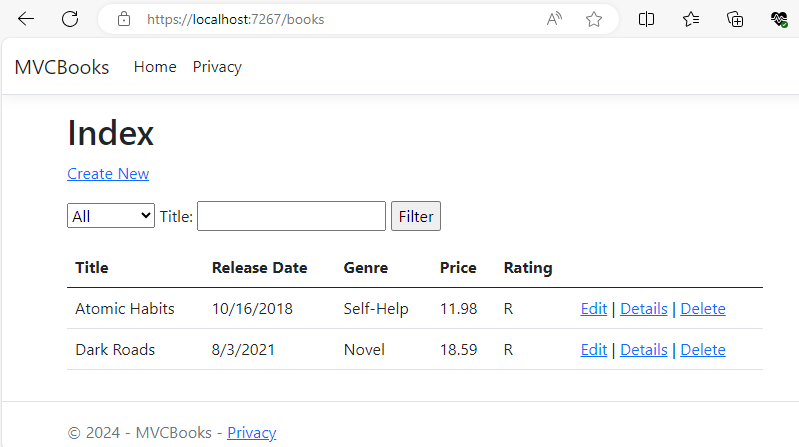

Nội dung bài học
Trong bài này, chúng ta sẽ thêm một trường (thuộc tính) mới đến lớp Book và trường này sẽ được ánh xạ tự động đến cơ sở dữ liệu bằng cách dùng EF Core Code First Migrations.
Để xếp hạng một cuốn sách theo bình chọn của độc giả, chúng ta thêm một thuộc tính tên Rating đến lớp Book trong tập tin Models / Book.cs:
Vì một thuộc tính mới được thêm đến lớp Book nên chúng ta cũng cần cập nhật thuộc tính này đến danh sách của thuộc tính [Bind] từ các phương thức Create và Edit trong tập tin BooksController.cs:
Bên cạnh đó, chúng ta cũng phải cập nhật thuộc tính Rating đến các giao diện hiển thị, tạo mới và chỉnh sửa thông tin của ứng dụng.
Mở tập tin Views / Books / Index.cshtml và thêm Rating:
Mở tập tin Views / Books / Create.cshtml
Tương tự thêm Rating cho các tập tin Edit.cshtml, Delete.cshtml và Details.cshtml trong thư mục Views / Books.
Mở tập tin SeedData.cs trong thư mục Models để thêm giá trị đến trường mới cho hai đối tượng mẫu:
Nếu thực thi chương trình lúc này sẽ phát sinh lỗi vì Model (lớp Book) khác với lược đồ cơ sở dữ liệu. Chúng ta phải dùng EF Core Migrations ánh xạ thuộc tính mới (Rating) sang lược đồ cơ sở dữ liệu bằng cách vào Tools chọn NuGet Package Manager > Package Manager Console và gõ lệnh sau đây vào PMC:
Bây giờ có thể thực thi ứng dụng. Chúng ta sẽ thấy xuất hiện cột Rating nhưng giá trị cột này vẫn chưa cập nhật. Xóa tất cả dữ liệu hiện có bằng cách nhấn liên kết Delete và đóng ứng dụng. Thực thi lại ứng dụng sẽ cập nhật các giá trị cho cột Rating:
Như vậy chúng ta đã hoàn thành các bước thêm 1 thuộc tính mới.